08.30.2012 23:34
John Hunter of matplotlib
I saw on Sean
Gillies blog, that Fernando had posted sad news about
John Hunter passing. We got to have him come to Google earlier
this year. He weill be greatly missed. memorial fund
I decided it was time to stop everything and watch his SciPy 2012 keynote video:
I decided it was time to stop everything and watch his SciPy 2012 keynote video:
08.29.2012 21:46
Hacking on mb-system
I needed a bit of a change of pace
for a little while, so I started working on my git clone of
MB-system (multibeam sonar echo sounder processing software). I've
created an instance of the install_template Makefiles, got it
building on my mac, and then removed libgsf. I used emacs and git
to really attack the code. There are still GSF vestiges in the code
that I need to remove (e.g. MB_DATA_SUMMARY), but these will take
more thought to make sure I'm removing the right code. Some of the
command that I ran: (grep's were with M-x grep in emacs).
# WARNING: this is an approximation git clone git@github.com:schwehr/mb-system.git cd mb-system git checkout -b macosx_build # create a branch and go into it git branch # make sure I am in the branch perl -pi.bak -e 's|\@FINKPREFIX\@|/sw|g' install_makefiles # fixes the gmt error below ./install_makefiles -Pmacosxfink make -j 4 # fiddle a bit till it was ready to commit git checkout install_makefiles # drop the changes to this file git -a Makefile */Makefile */*/Makefile git commit -m "path tweaks by install_makefiles" git checkout -b rm_gsf # branch off of the first branch cd src git rm -r gsf find . -name "*.[ch]" | xargs egrep -i 'mb_data_summary|gsf' grep -nH -i -e gsf */Makefile */*/Makefile # Lots of hacking make -j5 # yup. compiles! git commit -a -m "gsf does not have a license" git checkout master # edit .gitignore git commit -a -m "ignore more" git push --all # push master and all branches back to github
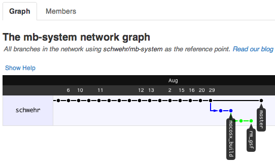
08.28.2012 15:22
Joel Johnson's IODP short course
I wish I had been able to attend a
course like this when I was a grad student. At SIO, I was lucky to
have Warren Smith, Jerry Bode, Neal Driscoll, Lisa Tauxe and Liz
Johnstone to help me figure out how to work with my piston cores.
Without them, I'd have been lost trying to analize flow-in (which
is not a geologic process). I've attached my time lapse video of
taking notes and samples from one of my cores. I ended up building
a core logger out of foam core... what a pain.
Comprehensive shipboard core description and data integration in the sedimentology lab during IODP expeditions provides a fundamental framework for the science party as they work toward the expedition objectives. It is primarily during this shipboard time that the cores are systematically described and sampled and the characteristics of the stratigraphy resolved and integrated with paleontological, paleomagnetic, physical property, geochemical, and seismic reflection data sets. This workprovides the science team with a record of what the cores contain; where there are interesting occurrences and transitions in primary composition, diagentic mineralization, deformation and biostratigraphic data; and the timescale over which these changes occur. This short course on shipboard sedimentology will cover marine sedimentary processes and products, smear slide and coarse fraction petrography, core logging and synthesis into DescLogik, and integration of sedimentology data with physical property, biostratratigraphy, and geochemistry data. The course will take place October 1-4, 2012 at the IODP Gulf Coast Repository in College Station, Texas. It is open to anyone who would like to attend, but space is limited. Travel funding is available for U.S.-affiliated scientists. Graduate students, post-docs, and professionals that will or are planning to sail on future IODP expeditions are particularly encouraged to apply. Participants may include sedimentologists, paleontologists, paleomagnetic scientists, geochemists, structural geologists, and physical property scientists. To apply, send your contact information, a two-page CV, and a brief statement of interest to Charna Meth at the U.S. Science Support Program (cmeth@oceanleadership.org). For questions concerning course content, please contact Joel Johnson at the University of New Hampshire (joel.johnson@unh.edu).
08.27.2012 11:32
cloning the mbsystem svn tree to git
I have been wanting to hack on
MB-System for a long long time. Last night, I finally took the
initial steps. My fiddling should be properly to the side of the
mbsystem svn world that the community is working with (aka... Fork!
Or spork?) and I should do each task in a branch so that it is
easier for people to take parts of what I am doing for
myself.
If you want check out what I've done so far, see:
https://github.com/schwehr/mb-system
To get the code:
Here is what I did to start off:
Now, here are some of the tasks on my todo list:
Here is an example of an extranious bit of commenting:
In case people were wondering, I'm not going to try to push any of this back at the main line of mb-system and I'm not going to support anyone using this code base. I'm doing this for my own use.
Now to find lots of extra hacking time!
If you want check out what I've done so far, see:
https://github.com/schwehr/mb-system
To get the code:
git clone https://github.com/schwehr/mb-system.git
Here is what I did to start off:
# made mb-system empty repo on github fink install git-svn git svn clone svn://svn.ilab.ldeo.columbia.edu/repo/mb-system/trunk # wait 5 minutes cd trunk git remote add origin git@github.com:schwehr/mb-system.git git push origin master # stare at code base wondering what I should do first
Now, here are some of the tasks on my todo list:
- Rip out libgsf as it is not legally usable code
- Remove all extranious comment lines, especially the cvs/svn log entries
- Remove all dead code. The easiest is unused variables.
- Switch to C++ so variables do not have to be declared at the top
- Start using const and references where ever possible
- Add lots and lots of unit and integration testing
- Collapse the giant fprintf chains by adding a couple simple helper macros
- Switch the build system (this one has been on my list the longest)
- Consider adding a python interface
Here is an example of an extranious bit of commenting:
/* return status */
return(status);
In case people were wondering, I'm not going to try to push any of this back at the main line of mb-system and I'm not going to support anyone using this code base. I'm doing this for my own use.
Now to find lots of extra hacking time!
08.24.2012 14:47
Optical flow and horizon finding for flight
Fun videos of old concepts. The
biologists see this kind of stuff in bees... Srinivasan has some
fun demos. Optical flow has
been around in computer vision for a long time.
Insect-inspired vision guidance systems for UAVs, Mandyam Srinivasan
Insect-inspired vision guidance systems for UAVs, Mandyam Srinivasan
08.23.2012 15:44
maritime domain awareness - icode-mda
This project is interesting. OSSIM
Planet and other fun tools.
icode-mda on Google Code:
ICODE-MDA on a Google Map
icode-mda on Google Code:
International Collaborative Development (I CODE) of Open Source Tools for Enhanced Maritime Domain Awareness (MDA) Program
ICODE-MDA on a Google Map
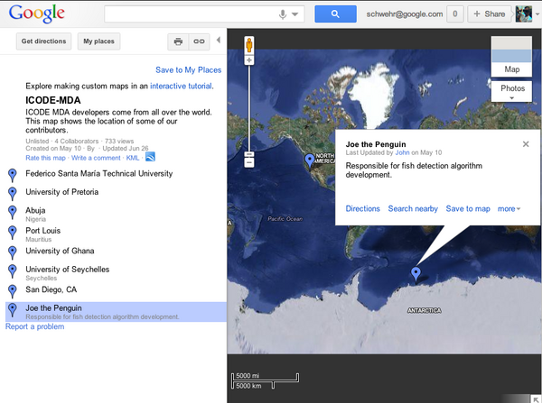
08.23.2012 08:27
Google Mars for Mars Science Laborator (MSL) / Curiosity
Thanks to Jody Davis and Jeremy
Shidner of NASA Langley for creating and sharing this great video
of the Mars Science Laboratory (MSL) going through Entry, Decent
and Landing (EDL) using the Mars mode Google Earth!
08.12.2012 03:16
Dr Seuss and NASA
Yesterday, I heard the story of Dr.
Seuss and NASA from the long time legal council for Dr. Seuss. He
told it differently than I find it in the book "Dr. Seuss: American
Icon". The way I heard, DRSEUSS was destined for a Mars and that it
was supposed to be the acronym that stood for: "Deep Reconnaissance
Space Exploration US Spaceship". The part about the NASA staff
retiring or being fired matches what I heard.
books.google.com
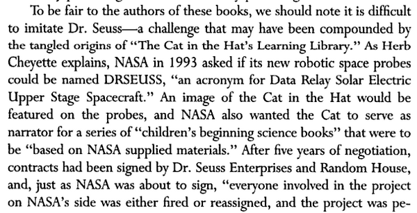
books.google.com
08.10.2012 19:04
Google Mars on UStream
Google Mars in the MSL Press
conference is on UStream:
To see Google Mars, skip in to 36:52
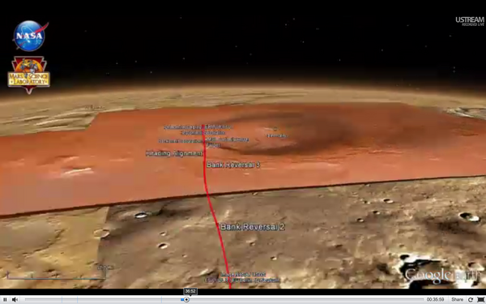
To see Google Mars, skip in to 36:52
08.10.2012 18:51
MSL Videos
Here are MSL videos that I (via SSV)
helped with this last week on MSL:
I didn't realize that this next overall video was out. I was on the team that created most of the animations used.
I didn't realize that this next overall video was out. I was on the team that created most of the animations used.
08.10.2012 10:45
Google Mars in the MSL press conference
Woohoo! Google Mars being used by the
MSL EDL Team!
This visualization was produced by Jody Davis and the rest of the EDL team. She works at NASA Langley Research Center.
This visualization was produced by Jody Davis and the rest of the EDL team. She works at NASA Langley Research Center.
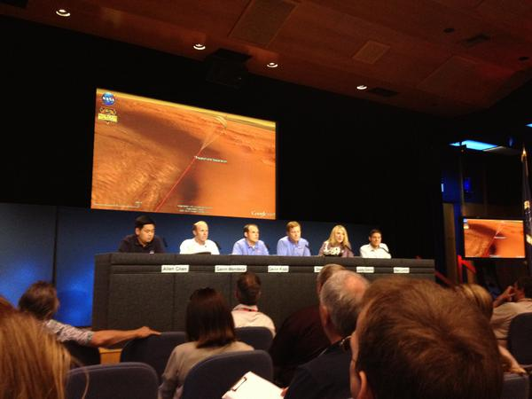
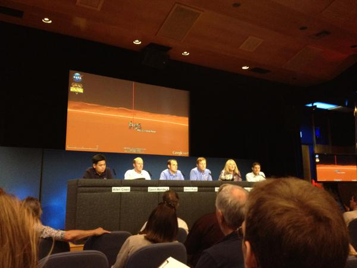
08.09.2012 10:40
Gale Crater - Mars Science Laboratory / Curiosity
Google Earth has a Mars mode that can
help you see the shape of the crater. If you make a profile, you
can right click on the profile and see the topography. This was a
question at the press conference today by the Irish reporter.
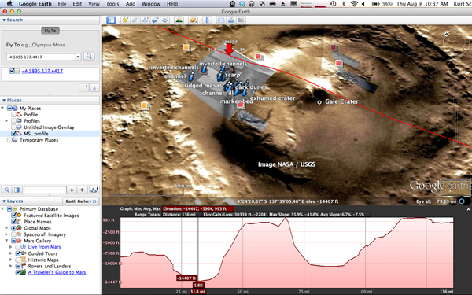
08.07.2012 08:56
MSL/Curiosity in Google Mars
At the press conference yesterday at
4PM PDT, Mike Malin announced the landing location. He used the
decent imagery from MRDI to pick out features as the spacecraft
came in for a landing. I didn't write down the numbers, but Emily
Lakdawalla has a very detailed blog post on the Planetary Society's
web site:
Curiosity: Notes from the two day-after-landing press briefings
An entertain note: Sitting pretty close to me right now is the PI, John Grotzinger. He and another scientist are having a great geology discussion.
4.5895 S, 137.4417 ECheck it out on Google Mars! Thanks to the team that is updating that visualization that you can see from the inside of Google Earth.
An entertain note: Sitting pretty close to me right now is the PI, John Grotzinger. He and another scientist are having a great geology discussion.
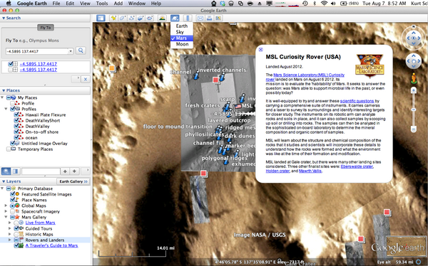
08.05.2012 21:30
About to land on Mars
I am in the weird mode on this
mission where I can actually write a quick blog post. On prior
missions, I was so swamped that I didn't know up from down. It
looks like today will be a 20 hour day for me. Most of my time will
be in an area known as the DIAL (digital imaging and analysis lab).
This is an area with a lot of behind the scenes folks who do image
handling, visualization and zillion small pieces.
I got a short break and got to talk to Monica. I got to say a quick hi to Wil Wheaton who is getting swamped by people and walked past Seth Greene. I saw the ISS pass over for the first time. Dang, that is bright.
I got a short break and got to talk to Monica. I got to say a quick hi to Wil Wheaton who is getting swamped by people and walked past Seth Greene. I saw the ISS pass over for the first time. Dang, that is bright.
08.05.2012 07:51
Cartoon style explanation of landing
I am highly entertained by this
version of MSL EDL explained.
08.04.2012 16:29
At JPL
MSL lands tomorrow. This morning, I
took a walk around to get familar with where I will be working
before it is full of busy people. I also ended up hanging out in
the back of a press conference waiting to hand off some material...
so I had Droid make an impromptu appearance.
TODO: write some captions for these image!
TODO: write some captions for these image!
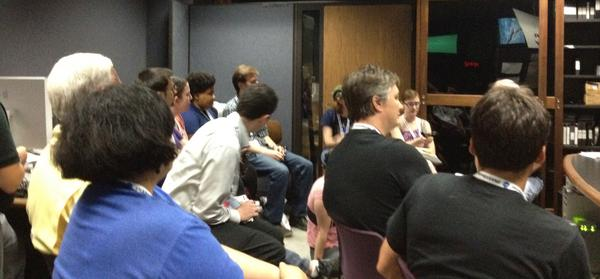
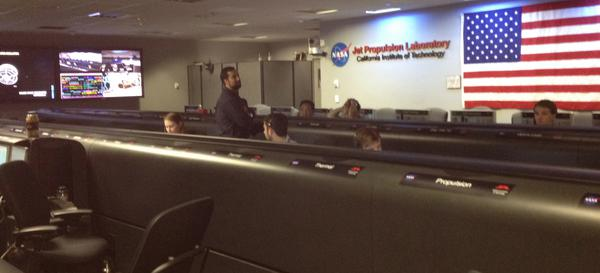
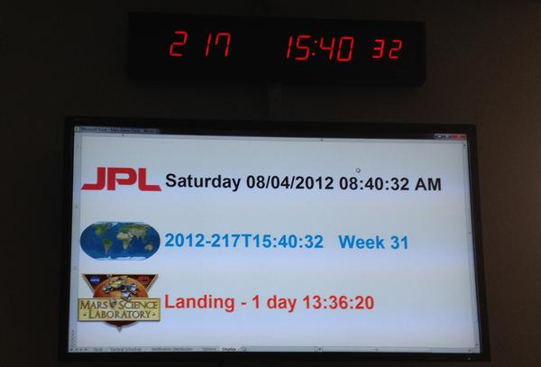
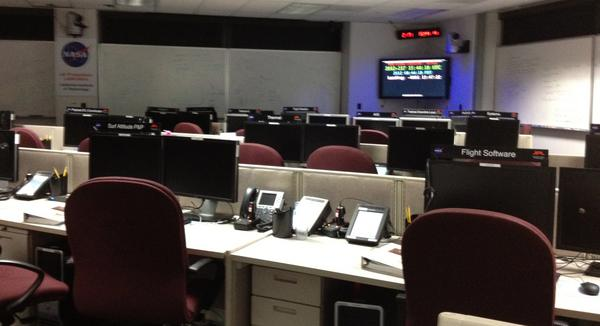
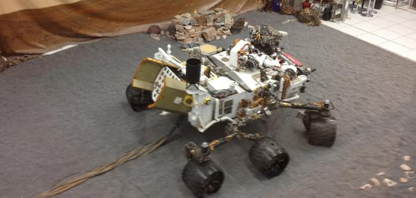
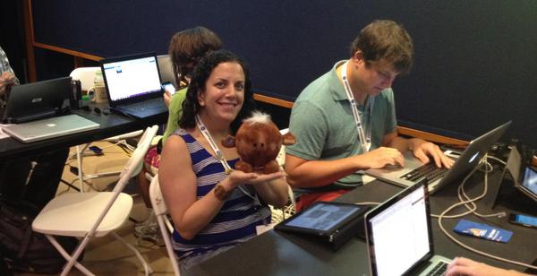
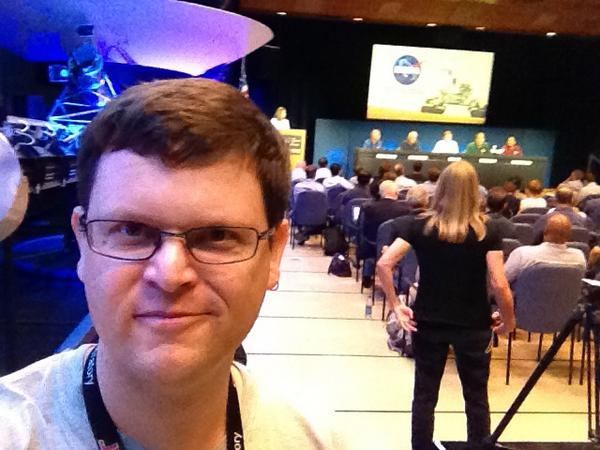
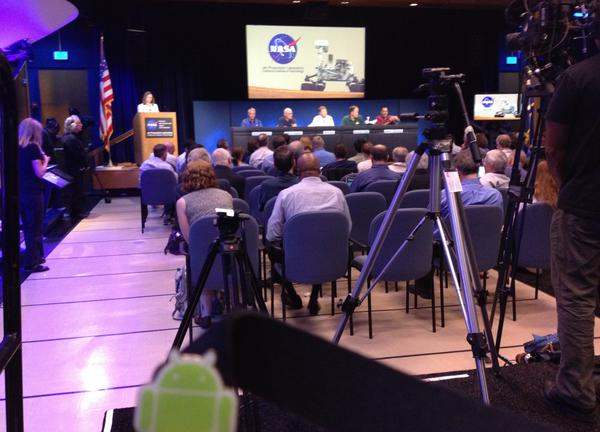
08.03.2012 07:40
Monica's day for NASA Social
Today is my 2nd day working on MSL
and Monica's 1st for the MSL NASA Social Team. Her schedule is a
lot crazy!
Friday, Aug. 3/Landing Minus 2: Registration and NASA Social Day 1 8 a.m. to 8:30 a.m. âÄìRegistration at the JPL Von Karman Auditorium; connect to WiFi, meet fellow participants, hands-on demonstrations 8:30 a.m. - Welcome by Jason Townsend (@NASA) and John Yembrick (@NASA) 8:35 a.m. - Introductions 9:15 a.m. - Break 9:30 a.m. - Televised #NASASocial program starts on NASA TV and http://www.ustream.tv/nasajpl with welcome by Veronica McGregor (@NASAJPL) 9:30 a.m. - Charles Elachi, director, NASAâÄôs Jet Propulsion Laboratory 9:40 a.m. - Dave Lavery, NASA Program Executive, NASA Headquarters 9:50 a.m. - Clara Ma, student who named Curiosity 10 a.m. - Curiosity Science Panel and Q&A 10:35 a.m. - Curiosity Engineering Panel and Q&A 11:35 a.m. - Lunch Break and Group Photo 12:30 p.m. - Meet with NASA Deputy Administrator Lori Garver 1 p.m. - Tour of NASAâÄôs Jet Propulsion Laboratory, including Mission Control, Earth Science Center, Mars Yard and Digital Image Animation Laboratory 5:00 p.m. - Return to von Karman Auditorium for departureI've got my "Operations Team" credentials yesterday and this morning I have an appointment to get my JPL "hard badge"... the one with the chip in it, so I can get through the doors that have card readers. Without that, it would be hard for me to help the team. The buzz around JPL is fantastic!
08.03.2012 07:37
Apple's mobile time machine
mtmfs on Mac OSX 10.7 is really
seriously annoying. It just ate about 15% of the battery life of my
Macbook Air while I tried to figure out why the CPU was going crazy
and the fan was cranking. Can I make this darn too not run while on
battery?
MTMFS(8) BSD System Manager's Manual MTMFS(8)
NAME
mtmfs -- Mobile Time Machine file system daemon
DESCRIPTION
mtmfs is the Mobile Time Machine file system daemon. It provides facili-
ties that allow the system to view local snapshots created by mtmd.
There are no configurations to mtmfs, and users should not run mtmfs man-
ually.
SEE ALSO
mtmd(8), tmutil(8)
08.01.2012 13:10
vdatum update
Just got this through the NOAA grape
vine:
Nice! I reported that 2nd bug last week.
VDatum website: http://vdatum.noaa.gov GEOID 2012 and VDatum 2.3.5 are released! VDatum 2.3.5 is released with following changes: - Added GEOID12 - Fixed bug that set horizontal datum as NAD83(1986) in v2.3.4And a look towards the future: "I hope this would be the last update for VDatum version 2."
Nice! I reported that 2nd bug last week.
08.01.2012 07:56
Arctic ERMA NOAA announcement
I definitely like seeing ERMA take
off on its own! It's great to see this joint announcement with NOAA
and BSEE (Bureau of Safety and Environmental Enforcement).
http://www.noaanews.noaa.gov/stories2012/arcticerma_finalfinal.pdf
http://www.noaanews.noaa.gov/stories2012/arcticerma_finalfinal.pdf
Federal mapping tool that aided first responders in Gulf spill expanded to Arctic A new federal interactive online mapping tool used by emergency responders during the Deepwater Horizon oil spill has been expanded to include the Arctic, and will help address numerous challenges in the Arctic posed by increasing ship traffic and proposed energy development. NOAA and the Department of the Interior's Bureau of Safety and Environmental Enforcement (BSEE), called the Environmental Response Management Application, known as ERMA, an important step forward for the Arctic region. "The addition of Arctic ERMA will be a tremendous benefit to responders in this rapidly developing region," said Jane Lubchenco, under secretary of commerce for oceans and atmosphere and NOAA administrator. "This scientific tool could provide essential information in responding to potential oil spills and pollution releases in the Arctic." "We are committed to a comprehensive, science-based approach to energy policy in the Arctic," said Deputy Secretary of the Interior David J. Hayes. "This initiative is part of the Administration's commitment to continuing the expansion of safe and responsible production of our domestic resources and is an exciting step forward in our efforts to collect, synthesize and deliver relevant information to decision-makers." "I know first-hand how critical it is for emergency responders to have the common operating picture ERMA provides," said BSEE director James A. Watson. "With the potential for oil and natural gas development, as well as increased shipping activity offshore Alaska, it is essential that responders have access to real-time information that provides full situational awareness. That's why I'm so pleased that BSEE was able to partner with NOAA to help complete this invaluable application." ... The Alaska Ocean Observing System, the University of Alaska Fairbanks, and the University of New Hampshire, as well as Alaska's Arctic boroughs, are working with NOAA's Office of Response and Restoration to keep this database current. Data includes the traditional and local knowledge of cultural and subsistence resources. They also include observations of the extent and concentration of sea ice, locations of ports and pipelines, and vulnerable environmental resources. Information in Arctic ERMA is pulled from many innovative and current sources, including data provided through a recent Memorandum of Agreement with Shell, Conoco-Phillips and Statoil USA that calls for the sharing of physical and biological data in the Arctic, as well as information gained during the August 2012 hydrographic survey cruise by the NOAA Ship Fairweather. ...
08.01.2012 07:43
NASA software release award
Yesterday, I just got a small check
in the mail from the US Treasury for work I did more than a decade
ago. While I'm not named on the official documents, NASA noticed my
contributions to the K9 Rover Control software. Why did it take so
long for me to get the award? Mostly that delay comes from me not
wanting to give my SSN to someone who emails or calls me claiming
to be from the government. I dropped by Ames and filled out the
forms. Rich Washington, if you are reading this, they are still
looking for you to give you your award. No, this is not like "The
Island."
Architecture for Control of the K9 Rover - Report/Patent Number: ARC-14587-1, March 2006
Architecture for Control of the K9 Rover - Report/Patent Number: ARC-14587-1, March 2006
Software featuring a multilevel architecture is used to control the hardware on the K9 Rover, which is a mobile robot used in research on robots for scientific exploration and autonomous operation in general. The software consists of five types of modules: Device Drivers - These modules, at the lowest level of the architecture, directly control motors, cameras, data buses, and other hardware devices. Resource Managers - Each of these modules controls several device drivers. Resource managers can be commanded by either a remote operator or the pilot or conditional-executive modules described below. Behaviors and Data Processors - These modules perform computations for such functions as planning paths, avoiding obstacles, visual tracking, and stereoscopy. These modules can be commanded only by the pilot. Pilot - The pilot receives a possibly complex command from the remote operator or the conditional executive, then decomposes the command into (1) more-specific commands to the resource managers and (2) requests for information from the behaviors and data processors. Conditional Executive - This highest-level module interprets a command plan sent by the remote operator, determines whether resources required for execution of the plan are available, monitors execution, and, if necessary, selects an alternate branch of the plan.
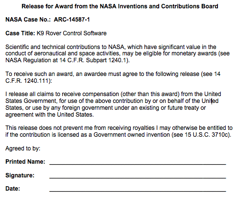